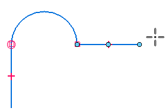
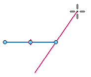
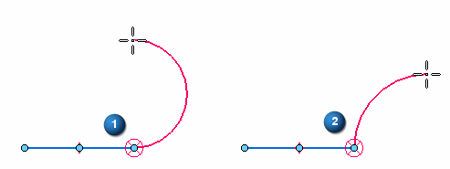

Line command
Use the Line command to draw a continuous series of lines and arcs that can be perpendicular or tangent to each other. You can create an open or closed shape by drawing lines and arcs in any combination. The last point of the line or arc is the first point of the next line or arc.

The Line command starts in line mode by default. If you want to start by drawing an arc, press the A key, or set the Type to Arc on the command bar. You can switch from line mode to arc mode as you draw using the L and A keys, or by setting the Type option on the command bar.
You can also switch to a symmetric line mode by pressing the S key. The first point is the midpoint of the line. The line endpoints are symmetric about the midpoint.

Intent zones
When you switch to arc mode, intent zones (1) and (2) are displayed at the last click point.

The intent zones allow you to control whether the new element is tangent to, perpendicular to, or at some other orientation to the previous element.
Shift key
During line creation, you can press and hold the Shift key to lock the angle edit field to 15 degree increments.
How do I
Draw a lineDraw connected lines and arcs
Example: Connect points while drawing a line